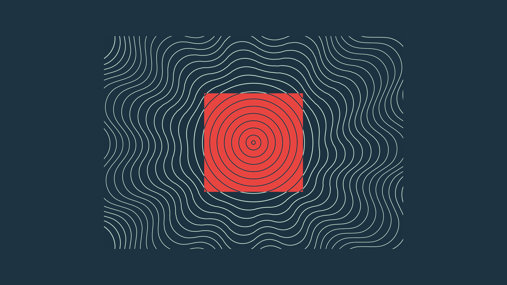
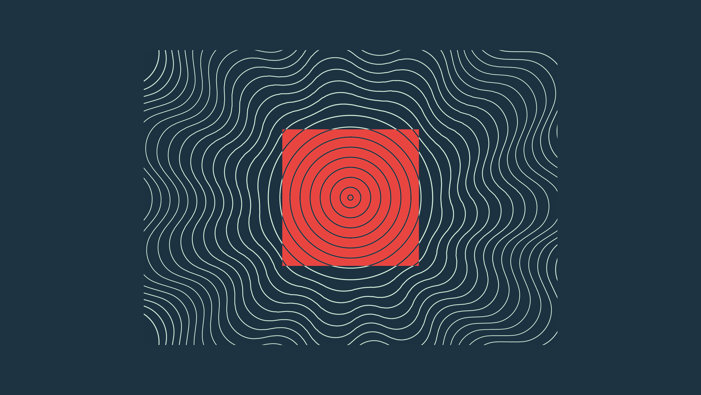

We transformed a corporate event into a living branding ecossystem. Orbitalks is more than a meeting series — it is a living knowledge, relationship, and strategic position platform. We created a brand that communicates innovation, engagement, and social impact in a integrated way. The mission was clear: unite technology, branding, and impact subjects in an experience with unique aesthetic and language, without losing Rocket's DNA.
Orbitalk's identity comes from a visual and verbal concept centered in motion, such as knowledge that orbitates, connects, and transforms. The naming, graphic assets, and brand tone were created to promote Technology, Accessibility, Connection, Expansion, and Impact.
Technical sheet:
Ideation, coordination, and strategy by Dafne Saqueti
Art direction and design by Nariel Arthur
Motion design by Otávio Stella
Orbitalks
üáßüá∑ Transformamos um evento corporativo em um ecossistema vivo de marca. Orbitalks √© mais do que uma s√©rie de encontros ‚Äî √© uma plataforma viva de conhecimento, relacionamento e posicionamento estrat√©gico. Criamos uma marca que comunica inova√ß√£o, engajamento e impacto social de forma integrada. A miss√£o era clara: unir tecnologia, branding e temas de impacto em uma experi√™ncia com linguagem e est√©tica pr√≥prias, sem perder o DNA da Rocket.
A identidade do Orbitalks parte de um conceito visual e verbal centrado no movimento, como conhecimento que orbita, se conecta, se transforma. O naming, os assets gráficos e o tom de voz foram construídos para promover Tecnologia, Acessibilidade, Conexão, Expansão e Impacto.
Ficha técnica:
Ideação, coordenação e estratégia por Dafne Saqueti
Direção de arte e design por Nariel Arthur
Motion design por Otávio Stella
MAY, 2025.
 
